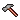
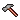

Font size:
History of Changes 0.1

Introduction and explanation of symbols
Changes are sorted by "type" and then chronologically with the most recent at the top. These symbols denote the various action types: =add, =fix,
=add, =fix,  =update
=update
Version 0.1 (2005-05-25)
Changes to Project Administration
-
Initial plugin code.
Committed by RDG.
Changes to the Code Base
-
Add projectDetails page using the DOAP.xml descriptor.
Committed by RDG.
-
Added automatic generation of release notes by requesting **/releaseNotes_VERSION-NUMBER.xml
Committed by RDG.
-
Enable the generation of changes for a specific version by requesting **/changes_VERSION-NUMBER.xml
Committed by RDG.
- Use the value "current" for the releaseNotes_* URI or specify a version number, i.e. show what is new for the latest release. Committed by DC. Thanks to Cyriaque Dupoirieux. See Issue FOR-564.
- Replace use of document() function in changes2rss.xml with sitemap aggregation. Committed by DC.
- Use the "title" attribute of "changes" and "todo" tags if it exists, otherwise use the hard-coded values. Committed by DC. Thanks to Cyriaque Dupoirieux. See Issue FOR-455.
-
Move ToDo and Changes pipelines to this plugin, from core.
Committed by RDG.
Changes to Design
-
Added optional "notes" element to "release" element of status 1.3 DTD. This
will be inserted into the release notes for that version.
Committed by RDG.
-
Added better sitemap match using regexp to deal
with sub-directories too.
Committed by DC.
Changes to Documentation
-
Basic documentation on how to create release notes are now included on the
plugins documentation index page.
Committed by RDG.
- Use relative location of images directory. Committed by DC.
Contributors to this release
We thank the following people for their contributions to this release.
This is a list of all people who participated as committers:
David Crossley (DC), Ross Gardler (RDG).
This is a list of other contributors:
Cyriaque Dupoirieux.